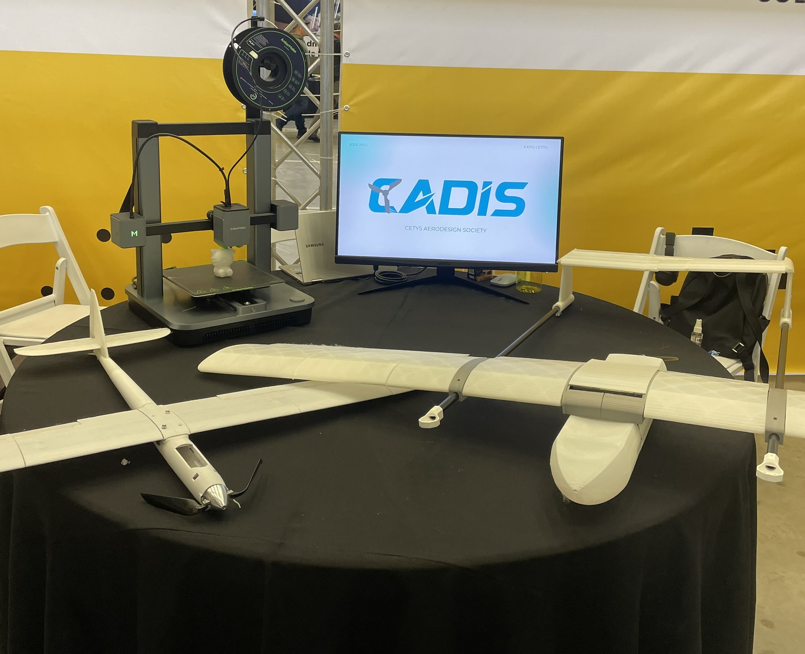
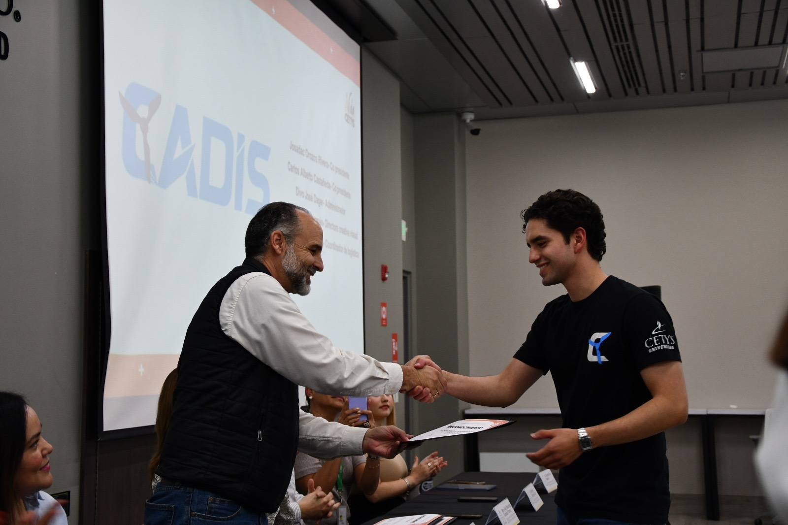
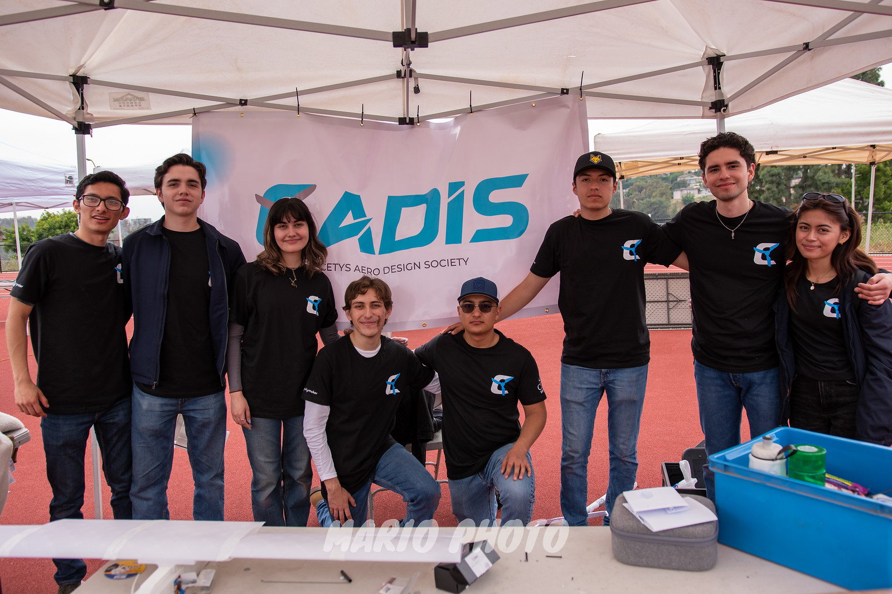

"Cetys Aerodesign Society" Engineering Student Club Founder (2023-2025)
CETYS University, Tijuana, Mx.


Description
In May 2023, I founded the "Cetys Aerodesign Society" (CADIS) engineering student club with the following objectives in mind.
- Promote interest in aerospace sciences at campus, by inviting students of all faculties to join the club and participate in our activities.
- Participate as a team in aeronautic engineering competitions, fostering personal and academic growth for students.
- Be a space where students of all ages and backgrounds can interact, grow, and learn to work as a team, while applying theoretical concepts to real-world applications, acquiring a deeper understanding of engineering fundamentals and soft skills.
My Contribution

As the founder and president of the student club, some of my responsibilities were:
- Organize the student board, appointing secretary, creative director, treasurer and team leads.
- Onboard team members on weekly meetings, discussing and assigning activities.
- Attend monthly meetings with the Student Affair Department for participation in campus-wide fund-raising activities.
- Teach use of SolidWorks and printing software to new club members for participation in the group's engineering competitions.
- Organizing club participation in volunteering work, such as Christmas events for foster children.